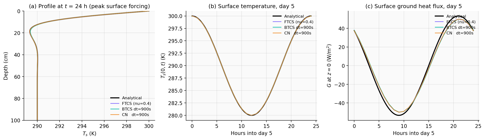
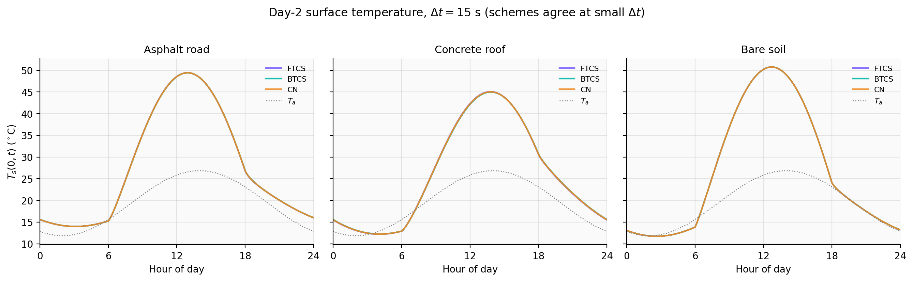
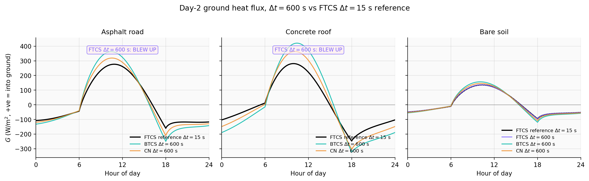
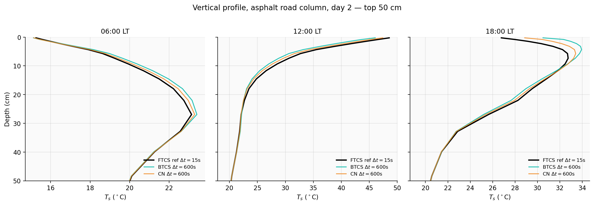
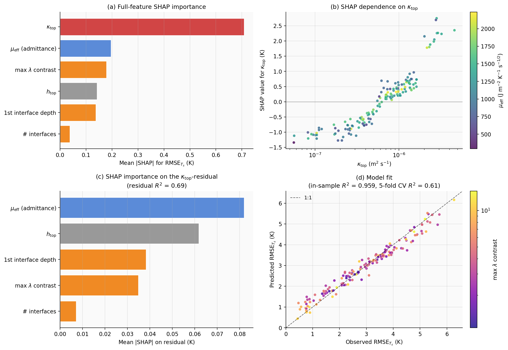

A LaTeX-rendered companion to modified_full_report_1.docx. Every concept, every equation, every notation explained from zero, with regular references to the course lecture notes (Lecture_1_2_3_4_5_6_7_8_9_10_11_Notes.md) and your six homeworks (HW1–HW6).
For every major equation, this document tells you (a) the status of the equation — is it an established theoretical formula, derived in this document, or a definition? — and (b) what every symbol means and what each line of math is saying in plain English.
Part 0. How to use this document
This document is built so that anyone — even with zero prior knowledge of numerical modelling, partial differential equations, or surface-energy-balance physics — can read the long report and defend every choice in it.
Reading recipe. Read Parts 1–3 in order. Then open the long report on one screen and this clarification on the other.
Conventions used throughout. - Inline math uses single dollars: e.g. $\nu = \kappa \Delta t / \Delta z^2$. - Display equations use double dollars and stand on their own line. - Every major equation is followed by a Reading this equation paragraph that walks through every symbol and what the equation is saying. - Every major equation has a Status label: - [Established] — fundamental physical law or established textbook result. - [Derived] — derived in this document or in the long report from established formulas. - [Definition] — a definition or a project-specific discretization choice.
Part 1. Foundational physics: heat, temperature, and the substrate
1.1 What does it mean for the ground to conduct heat?
Imagine a paving stone in the sun. The top is hot — say $50 ^\circ\mathrm{C}$. Five centimetres down, the stone is much cooler — say $30 ^\circ\mathrm{C}$. There is a temperature gradient inside the stone. As long as that gradient exists, heat will flow from the hot top to the cool bottom. This flow is conduction.
The amount of heat that flows per square metre per second is the conductive heat flux, denoted $G$ in this project. The symbol $G$ is just a label — a single letter that stands for "ground heat flux at this location, at this time". Its units are watts per square metre, $\mathrm{W/m^{2}}$. By convention $G > 0$ means flow downward (into the ground).
To make this less abstract: a typical mid-afternoon $G$ on a sun-warmed asphalt road is about $200$ W/m² (positive, into the ground). At night the same surface emits at perhaps $-50$ W/m² (negative, out of the ground).
1.2 The four key material properties
Every substrate is described by two material numbers, from which a third is derived. The fourth quantity is a length scale.
Thermal conductivity $\lambda$ (Greek letter "lambda"). Units W/m/K. The number $\lambda$ tells you how much heat flows through the material per unit temperature gradient. Bigger $\lambda$ means heat propagates more easily. Air $\approx 0.025$; rigid foam $\approx 0.03$; dry sandy soil $\approx 0.30$; asphalt $\approx 0.75$; concrete $\approx 1.5$; granite $\approx 3.0$.
Volumetric heat capacity $C$. Units J/m³/K. The number $C$ tells you how much energy (in joules) is needed to raise one cubic metre of the material by one Kelvin. Water $\approx 4.18 \times 10^{6}$; concrete $\approx 2.1 \times 10^{6}$; dry sandy soil $\approx 1.3 \times 10^{6}$.
Thermal diffusivity $\kappa$ (Greek letter "kappa"). Defined as
$$\kappa = \frac{\lambda}{C}.$$
Status: [Definition]. $\kappa$ is just a name for the ratio $\lambda/C$.
Reading this equation. Left side: the symbol $\kappa$, a new quantity we are giving a name to. Right side: the ratio $\lambda/C$ where $\lambda$ has units W/m/K = (J/s)/m/K and $C$ has units J/m³/K. The ratio's units work out to m²/s. The physical meaning: if a substrate has high $\lambda$ but also large $C$ (a big reservoir to heat up), the temperature changes only slowly even though heat flows quickly. The ratio $\kappa = \lambda/C$ is the single number that controls how fast the temperature itself responds.
For our project's substrates: $\kappa$ is in the range $10^{-7}$ to $10^{-6}$ m²/s.
Diurnal damping depth $d$. The depth at which the daily temperature wave decays to about 37% of its surface amplitude.
$$d = \sqrt{\frac{2\kappa}{\omega}}, \qquad \omega = \frac{2\pi}{86400\ \text{s}} \approx 7.27 \times 10^{-5}\ \text{rad/s}.$$
Status: [Established theoretical formula], derived from solving the heat equation in a semi-infinite medium with sinusoidal Dirichlet forcing (Carslaw & Jaeger 1959 §2.6; Hillel 2003). Re-derived in Part 8.1.
Reading this equation. Left side: $d$, a length (metres). Right side: $\sqrt{ }$ is the square-root symbol; $2$ is the constant 2; $\kappa$ is thermal diffusivity; $\omega$ (Greek "omega") is the angular frequency of the daily cycle. Because one full cycle is $2\pi$ radians and one day is $86 400$ seconds, $\omega = 2\pi / 86 400 \approx 7.27 \times 10^{-5}$ radians per second. The square-root structure says: faster-diffusing materials (larger $\kappa$) feel the surface signal deeper; faster cycles (larger $\omega$) decay closer to the surface.
[Notes #2 — 2nd-Order PDEs] classifies the heat equation as parabolic ($B^2 - 4AC = 0$) and notes: "Amplitude decreases; the initial 'pile' of material does not propagate but spreads horizontally."
1.3 The diurnal damping depth — worked example
Worked example — bare soil damping depth.
Sandy loam: $\lambda = 0.30$ W/m/K, $C = 1.3\times 10^6$ J/m³/K.
$$\kappa = \frac{\lambda}{C} = \frac{0.30}{1.3\times 10^6} = 2.31\times 10^{-7}\ \text{m}^2/\text{s}.$$
Reading this calculation. Plug $\lambda = 0.30$ into the numerator and $C = 1.3 \times 10^6$ into the denominator. The ratio is $0.000 000 231$ in units of m²/s. Tells us bare soil's temperature responds slowly.
$$d = \sqrt{\frac{2 \times 2.31\times 10^{-7}}{7.27\times 10^{-5}}} = \sqrt{6.35\times 10^{-3}} = 0.0797\ \text{m} = 7.97\ \text{cm}.$$
Reading this calculation. Numerator $2\kappa = 4.62\times 10^{-7}$. Denominator $\omega = 7.27\times 10^{-5}$. Ratio is $6.35\times 10^{-3}$ in m². Square root: $0.0797$ m, which is 7.97 cm. The daily wave in bare soil decays to 37% of amplitude in just under 8 cm of depth.
Same calculation for the other substrates:
| Substrate | $\lambda$ | $C$ | $\kappa = \lambda/C$ | $d$ |
|---|---|---|---|---|
| Bare soil | 0.30 | $1.3\times 10^{6}$ | $2.31\times 10^{-7}$ | 7.97 cm |
| Asphalt (top) | 0.75 | $2.0\times 10^{6}$ | $3.75\times 10^{-7}$ | 10.16 cm |
| Concrete deck | 1.50 | $2.1\times 10^{6}$ | $7.14\times 10^{-7}$ | 14.02 cm |
So the daily wave penetrates only the top 8–14 cm. Our topmost grid cells must be much smaller than $d$ — typically half a centimetre to one centimetre.
1.4 Why $d$ matters for picking time steps
For the explicit (FTCS) scheme, the maximum stable time step is
$$\Delta t_{\max} = \frac{1}{2}\frac{\Delta z^2}{\kappa}.$$
Status: [Derived] from von Neumann stability analysis (Part 6.5). Standard result for parabolic equations [Notes #9 §Pure Diffusion].
Reading this equation. $\Delta t_{\max}$ (read "delta t max") is the largest stable time step. The Greek $\Delta$ ("capital delta") is conventionally used for "small change in" — so $\Delta t$ is a discrete time step, $\Delta z$ is a grid cell thickness. The equation says: the maximum stable step is $\Delta z$ squared, divided by $\kappa$, times one-half. The "half" comes from the worst-case wavenumber in von Neumann analysis.
Worked example — the 17-second problem. For $\Delta z = 5$ mm $= 0.005$ m and the concrete deck's $\kappa = 7.14\times 10^{-7}$ m²/s:
$$\Delta t_{\max} = \frac{1}{2}\frac{(0.005)^2}{7.14\times 10^{-7}} = \frac{1}{2}\frac{2.5\times 10^{-5}}{7.14\times 10^{-7}} \approx 17\ \text{s}.$$
Reading this calculation. Square the cell thickness: $(0.005)^2 = 2.5 \times 10^{-5}$ m². Divide by $\kappa$: $35$ s. Multiply by $\frac{1}{2}$: $17.5$ s. So with a 5 mm cell on the concrete deck, FTCS can take steps up to about 17 seconds — and no larger.
Connecting to your work. In [HW1] your FTCS tracer integration blew up at step 113 — the same kind of geometric instability the project's FTCS exhibits at $\Delta t = 600$ s on the asphalt road.
1.5 The four-component surface energy balance
Surface temperature $T_s^0$ is determined by an energy balance at the surface. Four fluxes meet there:
- $R_n$ — net absorbed radiation, positive when energy is being deposited.
- $H$ — sensible heat flux to the air, positive when heat leaves the surface upward.
- $LE$ — latent heat flux from evaporation. In this project $LE = 0$.
- $G$ — conductive heat flux into the substrate (positive downward).
Energy conservation requires what arrives equals what leaves:
$$R_n - H - LE - G = 0.$$
Status: [Established] — first law of thermodynamics applied at the surface.
Reading this equation. Four quantities all in W/m². $R_n$ (read "R-sub-n", short for "net radiation") is energy coming in from sun and sky. $H$, $LE$, $G$ are three pathways energy leaves the surface. Conservation: incoming = sum of outgoing, or equivalently $R_n - H - LE - G = 0$. This is the surface energy balance (SEB).
The notation $T_s^0$ means "$T$ at the substrate surface, depth zero". The "0" superscript is a label (depth $z = 0$), not an exponent.
1.6 Units and dimensional analysis sanity check
- $C \partial T/\partial t$ has units (J/m³/K)(K/s) = W/m³.
- $\partial/\partial z[\lambda \partial T/\partial z]$ has units m⁻¹·(W/m/K)·K·m⁻¹ = W/m³. Same. ✓
- $\nu = \kappa \Delta t/\Delta z^2$ has units (m²/s)(s)/m² = dimensionless. ✓
- $r_a = 1/(C_H U)$ has units 1/(m/s) = s/m. ✓
- $H = \rho c_p (T_s - T_a)/r_a$ has units (kg/m³)(J/kg/K)(K)/(s/m) = W/m². ✓
[Notes #3 §1 Taylor Series] is the algebraic foundation of the finite differences we use.
Part 2. From a continuous PDE to a discrete computer program
2.1 What is a partial differential equation?
An ordinary differential equation (ODE) describes how something changes with respect to one variable. Newton's law of cooling, $dT/dt = -k(T - T_\infty)$, is an ODE.
A partial differential equation (PDE) involves derivatives with respect to more than one variable. Heat conduction in depth is a PDE because $T$ depends on both $z$ and $t$:
$$\frac{\partial T}{\partial t} = \kappa \frac{\partial^2 T}{\partial z^2}.$$
Status: [Established] — the diffusion equation. Re-derived in Part 6.1.
Reading this equation. The symbol $\partial$ (a curly d, read "partial") is used instead of regular $d$ when the function depends on multiple variables. So $\partial T/\partial t$ means "rate of change of $T$ with respect to $t$, holding $z$ fixed". $\partial^2 T/\partial z^2$ is the second partial derivative with respect to $z$ — the curvature of $T$ as a function of $z$ at a fixed time.
In plain words: at every point $(z, t)$, the temperature is rising in time at a rate proportional to how curved it is in space at that moment. If $T$ is concave-up (curving upward like a bowl bottom), the second derivative is positive and $T$ rises with time. If $T$ is concave-down (peak), $T$ falls. So heat diffuses by smoothing out curvature: peaks decay, troughs fill in.
2.2 The PDE classification — why heat is parabolic
[Notes #2] classifies linear second-order PDEs by the discriminant $B^2 - 4AC$ of the general form
$$A u_{xx} + B u_{xy} + C u_{yy} + \text{lower-order terms} = 0.$$
Status: [Established] — standard PDE classification.
Reading this equation. Shorthand: $u_{xx}$ means $\partial^2 u/\partial x^2$, $u_{xy}$ means $\partial^2 u/\partial x \partial y$, $u_{yy}$ means $\partial^2 u/\partial y^2$. $A$, $B$, $C$ are coefficient functions. The discriminant $B^2 - 4AC$ is the same algebraic combination that classifies conic sections (ellipse, parabola, hyperbola).
- Elliptic ($B^2 - 4AC < 0$). Steady-state, no time direction.
- Hyperbolic ($B^2 - 4AC > 0$). Wave-like.
- Parabolic ($B^2 - 4AC = 0$). Diffusion-like.
Our heat conduction equation $u_t - \kappa u_{zz} = 0$ has $A = -\kappa$ for $u_{zz}$, with $B = 0$ and $C = 0$. Discriminant: $0 - 4(-\kappa)(0) = 0$ — parabolic.
2.3 The two basic finite-difference ideas
For a smooth function $f(x)$, Taylor's theorem gives:
$$f(x + \Delta x) = f(x) + \Delta x f'(x) + \frac{\Delta x^2}{2} f''(x) + \frac{\Delta x^3}{6} f'''(x) + O(\Delta x^4).$$
Status: [Established] — Taylor's theorem.
Reading this equation. Left side: value of $f$ at a slightly different point. Right side: an expression using only $f$ and its derivatives at the original point $x$. Notation: $f'(x)$ is the first derivative, $f''(x)$ the second, $f'''(x)$ the third. $O(\Delta x^4)$ means "all remaining terms are of order $\Delta x^4$ or smaller". So if $\Delta x$ is small, knowing $f$ and its derivatives at $x$ lets us approximate $f(x + \Delta x)$.
Rearranging gives three estimates of $f'(x)$:
Forward difference:
$$f'(x) \approx \frac{f(x + \Delta x) - f(x)}{\Delta x}.$$
Status: [Established] — first-order accurate, error $O(\Delta x)$.
Reading this equation. Take Taylor's series, subtract $f(x)$ from both sides, divide by $\Delta x$. Get $f'(x) + (\Delta x/2) f''(x) + \ldots$. Drop everything but the first term. The dropped term is order $\Delta x$ — the error. In plain words: take the slope between this point and the next one and call it the derivative.
Backward difference:
$$f'(x) \approx \frac{f(x) - f(x - \Delta x)}{\Delta x}.$$
Status: [Established] — first-order.
Centred difference:
$$f'(x) \approx \frac{f(x + \Delta x) - f(x - \Delta x)}{2 \Delta x}.$$
Status: [Established] — second-order, $O(\Delta x^2)$.
Reading this equation. Average the slopes from this point to the next and from this point to the previous, and call it the derivative. When we subtract the forward and backward Taylor expansions, the $f''$ terms have opposite signs and cancel. First surviving error is $O(\Delta x^2)$.
For a second derivative we use the centred three-point formula:
$$f''(x) \approx \frac{f(x + \Delta x) - 2f(x) + f(x - \Delta x)}{\Delta x^2} + O(\Delta x^2).$$
Status: [Established] — second-order accurate.
Reading this equation. "Forward slope at this point" minus "backward slope at this point", divided by $\Delta x$. That gives "rate of change of slope" = second derivative.
2.4 What does "stability" mean?
A finite-difference scheme is stable if small numerical errors at one time step do not grow unboundedly over many time steps. If errors grow, the solution "blows up" — temperatures become infinite or NaN. Stability is separate from accuracy.
Some schemes are conditionally stable — $\Delta t$ must be smaller than some bound. Others are unconditionally stable.
[Notes #6 §10] introduces von Neumann analysis. [HW3] and [HW4] both used it.
Part 3. The vocabulary of finite-difference time-stepping schemes
3.1 The general framework
[Notes #6 §3] introduces notation: let $\psi$ denote the true solution, $\phi_j^n$ the numerical approximation at $t = n \Delta t$. For the ODE form $d\psi/dt = f(\psi, t)$, the goal is to construct schemes for advancing $\phi^n \to \phi^{n+1}$ that approximate the exact integral
$$\psi^{n+1} = \psi^n + \int_{n\Delta t}^{(n+1)\Delta t} f(\psi, t) dt.$$
Status: [Established] — fundamental theorem of calculus.
Reading this equation. Symbols: $\psi$ (Greek "psi") is the true solution; $\phi$ (Greek "phi") is the numerical approximation. Superscripts $n$ and $n+1$ are time-level indices (not exponents): $\phi^n$ means "$\phi$ at time $n\Delta t$". The integral on the right is the area under the rate-function curve $f$ from $t = n\Delta t$ to $t = (n+1)\Delta t$. In plain words: the next value equals the current value plus the accumulated change in between, where the change is the integral of the rate $f$.
3.2 Explicit vs implicit (Notes #6 §5)
Explicit (forward Euler): $T^{n+1} = T^n + \Delta t f(T^n)$.
Reading this scheme. The new value $T^{n+1}$ equals the old value $T^n$ plus $\Delta t$ times the rate $f$ at the old time level. We approximate the integral as "(rate at start of interval) × (interval length)". Cheap per step, conditionally stable.
Implicit (backward Euler): $T^{n+1} = T^n + \Delta t f(T^{n+1})$.
Reading this scheme. Same form, but $f$ is evaluated at the new time level $T^{n+1}$. Since $T^{n+1}$ appears on both sides, we have to solve an algebraic equation. Expensive per step, unconditionally stable.
Status: [Established] schemes — both date from Euler.
3.3 The trapezoidal rule = Crank–Nicolson
Take the average of explicit and implicit:
$$T^{n+1} = T^n + \frac{\Delta t}{2}[f(T^n) + f(T^{n+1})].$$
Status: [Established] — trapezoidal rule for ODE integration. Applied to the heat equation it is named Crank–Nicolson (1947).
Reading this scheme. Approximate the integral as the average of rate at start and rate at end, times interval length. Geometrically a trapezoid under the rate curve. The symmetric averaging cancels the leading first-order error term — second-order accurate.
3.4 The full $\theta$-method family
All three schemes are special cases of one formula:
$$T^{n+1} = T^n + \Delta t [\alpha f(T^{n+1}) + (1-\alpha) f(T^n)].$$
Status: [Established] — the $\theta$-method.
Reading this equation. Weighted average of new and old rate, with weight $\alpha$ on new and $(1-\alpha)$ on old. $\alpha = 0$ is forward Euler / FTCS; $\alpha = 1$ is backward Euler / BTCS; $\alpha = 1/2$ is Crank–Nicolson. One formula, three schemes.
| $\alpha$ | Scheme | Order in $\Delta t$ | Stability |
|---|---|---|---|
| $0$ | FTCS / Forward Euler | first | conditional, $\nu \le 1/2$ |
| $1/2$ | Crank–Nicolson | second | unconditional |
| $1$ | BTCS / Backward Euler | first | unconditional |
[Notes #6 §6 (Slides 15–17)] introduces these three schemes by name. The lecture-note formulae are
$$\phi^{n+1} = \phi^n + \Delta t f^n \quad \text{(Euler/forward)}$$
$$\phi^{n+1} = \phi^n + \Delta t f^{n+1} \quad \text{(Backward)}$$
$$\phi^{n+1} = \phi^n + \tfrac{1}{2}\Delta t (f^n + f^{n+1}) \quad \text{(Trapezoidal)}$$
3.5 Other schemes you have seen
[Notes #6] discusses several more schemes.
Matsuno scheme (predictor-corrector):
$$\phi^{ n+1} = \phi^n + \Delta t f^n, \qquad \phi^{n+1} = \phi^n + \Delta t f(\phi^{ n+1}).$$
Reading this scheme. Two stages. The asterisk in $\phi^$ flags it as a "guess" or "predictor". First a forward Euler step to get $\phi^$. Then re-evaluate $f$ at the predicted value $\phi^*$, and use that for the actual update. Iterative explicit; approximates Backward Euler.
Heun scheme (2nd-order Runge–Kutta): explicit, second-order.
Leapfrog: $\phi^{n+1} = \phi^{n-1} + 2\Delta t f^n$. Three-level, explicit, second-order. Unstable for diffusion.
[HW3] is the direct ancestor:
- Case 1 (Euler): amplitude grows above 1 — unstable.
- Case 2 (Backward): amplitude decays below 1 — stable but damping.
- Case 3 (Trapezoidal): amplitude stays at 1 — neutrally stable.
- Case 4 (Matsuno): amplitude decays slightly.
3.6 Why the project uses the $\theta$-method specifically
Three benefits: single source of truth for the spatial discretisation; three numbers replace three routines; same banded-tridiagonal solver handles BTCS and CN.
Part 4. Walking through the abstract
The abstract is the densest paragraph in the report. We unpack it claim by claim.
"The ground heat flux is the energy that the surface stores and releases from its substrate over a diurnal cycle, and is the term in the surface energy budget that is most sensitive to numerical treatment."
$G$ (ground heat flux) is small in daily mean, but it controls the day-night temperature swing. The other three SEB terms are local in time. $G$ involves the history of the substrate — and history dependence is exactly what numerical errors accumulate in.
"...explicit forward-time discretization is conditionally stable only when $\nu = \kappa_s\Delta t/\Delta z^2 \le 1/2$..."
Decoded: - "explicit forward-time discretization" = FTCS = $\alpha = 0$. - The symbol $\nu$ (Greek "nu") is a dimensionless number — the diffusion number. It combines $\kappa$, $\Delta t$, and $\Delta z$ in the unique way that determines stability.
"...a constraint that becomes prohibitive for the cm-scale near-surface layers..."
Since $d \sim 8$–$14$ cm, $\Delta z \ll d$ requires $\Delta z \sim 0.5$–$1$ cm. Concrete and asphalt have higher $\kappa$ than soil and so push the FTCS bound to even smaller $\Delta t$.
"...coupled to a fully prognostic surface energy balance solved by Newton iteration."
Prognostic: $T_s^0$ is computed by the model at every step. (In Test 1 it is prescribed; in Test 2 it is solved.)
"FTCS blows up at $\Delta t = 60$ s on the concrete roof and at $\Delta t = 600$ s on the asphalt road and concrete roof" — bare soil at $\Delta t = 600$ s is over the bound but completes with substantial error.
"BTCS at $\Delta t = 600$ s over-amplifies the diurnal G amplitude by 40% on asphalt and concrete and by 20% on bare soil; CN at the same $\Delta t$ halves these errors." — These are the headline numbers.
"The empirical $\Delta t$-refinement ratios for BTCS and CN are both close to 10:1..."
CN is intrinsically second-order, so a ratio of 10 (not 100) tells us the dominant error is not per-substep CN truncation; it is operator splitting.
"$\kappa_{\text{top}}$ is the dominant predictor..."
Notation: $\kappa_{\text{top}}$ is "$\kappa$ in the top cell". $R^2$ is the coefficient of determination — a number between 0 and 1 measuring how much of the target's variance the predictor explains.
Part 5. Walking through §1 Introduction
5.1 Why the urban heat island depends on $G$ specifically
The urban heat island (UHI) is the systematic phenomenon that cities are warmer than rural areas, especially at night. The central mechanism for the night-time component is heat storage.
During the day, urban materials absorb shortwave. After sunset, $R_n$ turns negative and stored heat is released. At night urban surface is still warm; rural one has cooled. The contrast is the nocturnal UHI. $G$ is the very quantity that puts heat into the urban substrate during the day and pulls it back at night.
[Notes #11 Misconception #3] ("Surface conditions are accurately depicted") emphasises that surface conditions in models may be poorly handled. The project addresses one specific way: the numerical treatment of $G$ at the column-SEB interface.
5.2 The damping-depth values quoted in the introduction
Paragraph 11 of the report says: "$d$ is approximately 8 cm in dry soil, 14 cm in dense concrete, and 10 cm in asphalt." We did the calculation in Part 1.3.
5.3 What "wavenumber-dependent damping" means
Every numerical scheme can be characterised by how it changes the amplitude of each Fourier component (each wavelength) per time step. We will derive these amplification factors explicitly in Part 6.5.
[HW2] asked you to verify amplitude conservation on a sine-wave initial condition. [HW4] plotted $|A_k|$ vs $k\Delta x$.
Part 6. Walking through §2 — Governing equation and numerical discretization
6.1 §2.1 — Where the heat conduction equation comes from
The report writes the heat conduction equation in conductivity form:
$$C_s(z) \frac{\partial T_s}{\partial t} = \frac{\partial}{\partial z}\left[\lambda_s(z) \frac{\partial T_s}{\partial z}\right].$$
Status: [Derived] below from Fourier's law plus energy conservation.
Reading this equation. Symbol-by-symbol:
- $T_s(z, t)$ — substrate temperature at depth $z$ and time $t$. The "s" subscript stands for "substrate" (distinguishing from air temperature $T_a$).
- $z$ — vertical depth, with $z = 0$ at the surface and increasing downward. So $z = 0.05$ means 5 cm below the surface.
- $t$ — time, in seconds.
- $\lambda_s(z)$ — thermal conductivity of the substrate at depth $z$. Written with $(z)$ to indicate $\lambda$ can change with depth (because we have layered substrates).
- $C_s(z)$ — volumetric heat capacity at depth $z$. Same depth-dependence.
- $\partial T_s/\partial t$ — partial derivative with respect to time, holding $z$ fixed. The rate at which temperature is changing in time at a given depth.
- $\partial T_s/\partial z$ — partial derivative with respect to depth, holding $t$ fixed. The temperature gradient.
- The big bracket $\partial/\partial z [ \lambda_s(z) \partial T_s/\partial z ]$ — first compute the temperature gradient, multiply by $\lambda_s$, then take the derivative with respect to $z$ of the result.
What the equation says in plain words. "The volumetric heat capacity multiplied by the rate of temperature change in time equals the spatial divergence of the conductive heat flux." Rearranged: at any depth and time, energy is being deposited locally at a rate equal to how the heat flux changes with depth. If more heat is flowing in from above than flowing out below, energy accumulates and temperature rises.
Derivation step by step
Step 1. Fourier's law of heat conduction.
$$q(z) = -\lambda_s(z) \frac{\partial T_s}{\partial z}.$$
Status: [Established] — Fourier's law (Joseph Fourier, 1822).
Reading this equation. Symbols:
- $q(z)$ — heat flux at depth $z$. Units W/m².
- $-\lambda_s$ — minus the thermal conductivity.
- $\partial T_s/\partial z$ — temperature gradient at depth $z$.
In words: heat flux equals the negative of conductivity times temperature gradient. The minus sign encodes the second law: heat flows from hot to cold. If $T$ decreases with depth ($\partial T/\partial z < 0$), then $q = -\lambda \cdot (\text{negative}) > 0$ — flux is in the $+z$ direction (downward). Matches physical intuition.
Step 2. Energy conservation in a thin slab. Pick a thin horizontal slab from depth $z$ to $z + dz$. Energy stored per unit horizontal area in the slab: $C_s T_s dz$. Rate of change of stored energy = net flux into the slab = $q(z) - q(z + dz)$:
$$\frac{\partial}{\partial t}(C_s T_s dz) = q(z) - q(z + dz).$$
Status: [Established] — first law of thermodynamics applied to a thin slab.
Reading this equation. Left side: rate of change of total energy stored in this slab. Right side: net rate at which heat is flowing into the slab. Energy conservation: they must be equal.
If $C_s$ is independent of time and we Taylor-expand $q(z + dz) \approx q(z) + (\partial q/\partial z) dz$:
$$C_s \frac{\partial T_s}{\partial t} dz = -\frac{\partial q}{\partial z} dz.$$
Reading this step. Both sides have factor $dz$; divide it out. Substituting Fourier's law $q = -\lambda_s \partial T_s/\partial z$:
$$C_s \frac{\partial T_s}{\partial t} = -\frac{\partial}{\partial z}(-\lambda_s \frac{\partial T_s}{\partial z}) = \frac{\partial}{\partial z}(\lambda_s \frac{\partial T_s}{\partial z}).$$
That is the conductivity-form heat equation. Status: [Derived] from two established laws.
Step 3. Why "conductivity form" instead of "diffusivity form"? If $\lambda$ and $C$ are constant, we can pull them out: $\partial T/\partial t = \kappa \partial^2 T/\partial z^2$ with $\kappa = \lambda/C$. In our layered substrates, $\lambda$ and $C$ jump across material interfaces, so we keep them inside the derivative to preserve discrete heat conservation.
6.2 §2.2 — The grid, the half-levels, the harmonic mean
Cell centres and the staggered grid
Replace continuous depth $z$ with cell centres $z_0, z_1, \ldots, z_{N-1}$. At each cell store one number: temperature $T_j$ at the centre of cell $j$.
Reading the notation. $T_j$ is "the temperature at cell $j$". The subscript $j$ is just a cell index — an integer from 0 up to $N-1$, where $N$ is the total number of cells. Between cells $j$ and $j+1$ lies a face at depth $z_{j+1/2} = (z_j + z_{j+1})/2$. The half-integer subscript $j+1/2$ is read as "between cell $j$ and cell $j+1$" — it is not literally a cell, just a label for the location halfway between two adjacent centres.
This staggered grid is the standard finite-volume layout. Heat that leaves cell $j$ across face $j+1/2$ is the same heat that enters cell $j+1$ across the same face — energy conserved by construction.
[HW5] showed empirically that on the unstaggered grid, a single point disturbance only spread to every other grid point. On the staggered grid, the disturbance spread smoothly.
The discrete flux equation
$$G_{j+1/2} = \lambda_{j+1/2} \frac{T_j - T_{j+1}}{z_{j+1} - z_j}.$$
Status: [Definition] — discretization of Fourier's law at the half-level using a centred difference.
Reading this equation. Symbols:
- $G_{j+1/2}$ — conductive heat flux through the face between cells $j$ and $j+1$. Sign: $G > 0$ means downward.
- $\lambda_{j+1/2}$ — thermal conductivity at the face. Computed from cell-centre values $\lambda_j$ and $\lambda_{j+1}$ via the harmonic mean (next).
- $T_j - T_{j+1}$ — temperature drop from cell $j$ to cell $j+1$. If $T_j > T_{j+1}$, heat flows downward.
- $z_{j+1} - z_j$ — centre-to-centre distance.
In plain words: heat flux at this face = (effective conductivity at the face) × (temperature drop) / (distance). Just Fourier's law $q = \lambda \Delta T/\Delta z$ written for two adjacent cells. The minus sign in Fourier's law has been absorbed into writing $T_j - T_{j+1}$ instead of $T_{j+1} - T_j$, so $G > 0$ means downward.
Why the harmonic mean for $\lambda$ at faces?
Solve the steady-state conduction problem across an interface between two materials in series. Flux must be the same on both sides:
$$q = \lambda_1 \frac{\Delta T_1}{\Delta z_1} = \lambda_2 \frac{\Delta T_2}{\Delta z_2}.$$
Reading this equation. Two materials in series — material 1 (upper), material 2 (lower). In steady state, the same flux $q$ flows through both, with each obeying Fourier's law.
Total drop is $\Delta T = \Delta T_1 + \Delta T_2$. From the relations: $\Delta T_1 = q\Delta z_1/\lambda_1$, $\Delta T_2 = q\Delta z_2/\lambda_2$. Adding:
$$\Delta T = q(\frac{\Delta z_1}{\lambda_1} + \frac{\Delta z_2}{\lambda_2}) = q \frac{\Delta z}{\lambda_{\text{eff}}},$$
where
$$\lambda_{\text{eff}} = \frac{\Delta z_1 + \Delta z_2}{\Delta z_1/\lambda_1 + \Delta z_2/\lambda_2}.$$
For two cells of equal thickness this collapses to:
$$\lambda_{j+1/2} = \frac{2 \lambda_j \lambda_{j+1}}{\lambda_j + \lambda_{j+1}}.$$
Status: [Derived] above. Standard convention in finite-volume codes (Patankar 1980).
Worked example. $\lambda_1 = 1.5$ (concrete deck), $\lambda_2 = 0.04$ (insulation). - Arithmetic mean: $(1.5 + 0.04)/2 = 0.77$. Wrong. - Harmonic mean: $2 \cdot 1.5 \cdot 0.04 / (1.5 + 0.04) = 0.12/1.54 = 0.078$. Correct (close to insulation).
The arithmetic mean over-estimates flux across this interface by a factor of about 10.
The semi-discrete tendency
$$C_j \Delta z_j \frac{dT_j}{dt} = G_{j-1/2} - G_{j+1/2}.$$
Status: [Derived] — discretizing the heat equation by integrating over cell $j$.
Reading this equation. Symbols: $C_j$ is heat capacity in cell $j$; $\Delta z_j$ is cell thickness; $C_j \Delta z_j$ is heat capacity per unit horizontal area; $dT_j/dt$ is rate of change of cell temperature with time (regular $d$, not $\partial$, because once space is discretised, temperature is a function of time only); $G_{j-1/2}$ is flux entering at the top; $G_{j+1/2}$ is flux leaving at the bottom.
Plain words: rate of energy accumulation in this cell = flux in at top - flux out at bottom. Semi-discrete: space discretised, time still continuous.
6.3 §2.3 — Building the $\theta$-method update equation
The semi-discrete equation is $C_j \Delta z_j dT_j/dt = R_j(t)$, where $R_j = G_{j-1/2} - G_{j+1/2}$. Integrate from $t^n$ to $t^{n+1}$:
$$C_j \Delta z_j (T_j^{n+1} - T_j^n) = \int_{t^n}^{t^{n+1}} R_j(t) dt.$$
Reading this equation. Left side: heat capacity times cell thickness times the temperature change over the step — that is the change in stored energy. Right side: integral of the rate $R_j$ over the step.
Three quadrature rules give three schemes: - Left rectangle: integral $\approx \Delta t R_j^n$. Gives FTCS. - Right rectangle: integral $\approx \Delta t R_j^{n+1}$. Gives BTCS. - Trapezoid: integral $\approx (\Delta t/2)[R_j^n + R_j^{n+1}]$. Gives CN.
In one line — the $\theta$-method update:
$$C_j \Delta z_j \frac{T_j^{n+1} - T_j^n}{\Delta t} = \alpha [G_{j-1/2} - G_{j+1/2}]^{n+1} + (1-\alpha) [G_{j-1/2} - G_{j+1/2}]^n.$$
Status: [Definition] — the project's discretisation.
Reading this equation. Left side: $C_j\Delta z_j$ multiplies the discrete time-derivative approximation $(T_j^{n+1} - T_j^n)/\Delta t$. Right side: $\alpha$-weighted average of flux divergence at time level $n+1$ (new) and $n$ (old). Notation $[\ldots]^{n+1}$ means "evaluate the bracketed expression at time level $n+1$".
Why FTCS, BTCS first-order; CN second-order
Plug into Taylor expansion around midpoint $t^n + \Delta t/2$. Let $R_m = R(t^n + \Delta t/2)$:
$$R(t^n) = R_m - \frac{\Delta t}{2} R'_m + \frac{\Delta t^2}{8} R''_m - \cdots$$
$$R(t^{n+1}) = R_m + \frac{\Delta t}{2} R'_m + \frac{\Delta t^2}{8} R''_m + \cdots$$
Average:
$$\frac{1}{2}[R(t^n) + R(t^{n+1})] = R_m + \frac{\Delta t^2}{8} R''_m + O(\Delta t^4).$$
Status: [Derived] — Taylor's theorem.
Reading this. $R_m$ is rate at midpoint. $R'_m$ is its time derivative there. The two Taylor expansions look the same except $\Delta t/2 \cdot R'_m$ has opposite signs. Averaging cancels them. Trapezoid is second-order. Single rectangles are first-order.
Linear systems and tridiagonal solves
When $\alpha > 0$, the RHS involves $T$ at level $n+1$. Each cell $j$ couples only to $j \pm 1$. Matrix is tridiagonal.
Tridiagonal systems solve in $O(N)$ via the Thomas algorithm — scipy.linalg.solve_banded((1,1), A, b).
Status: [Established algorithm] (Thomas 1949).
6.4 §2.4 — The boundary conditions
Two main types: - Dirichlet — prescribes the value of $T$ at the boundary. - Neumann — prescribes the value of the gradient $\partial T/\partial z$ at the boundary.
Status: [Established] — standard PDE classification.
Lower boundary: zero-flux Neumann. At $z = z_{\text{top}} = 2$ m we impose $\partial T/\partial z = 0$. Discretely: $T_{N-1} = T_{N-2}$. Reading this: deepest cell ($j = N-1$) has the same temperature as the cell above ($j = N-2$), forcing the discrete gradient between them to zero, hence zero flux.
Upper boundary: Dirichlet on $T_s^0$. At cell 0 we set $T_0 = T_s^0$. The "0" superscript in $T_s^0$ is a label (depth zero), not an exponent.
6.5 §2.5 — Von Neumann stability analysis from scratch
Setup: linearise, idealise, then test
Von Neumann analysis works only for linear schemes on uniform grids with constant coefficients. Idealise: assume $\lambda$ and $C$ are constant, $\Delta z$ uniform, periodic boundaries.
Step 1 — Substitute a Fourier mode
Any small perturbation can be written as a sum of complex-exponential Fourier modes:
$$T_j^n = A^n e^{ikj\Delta z}.$$
Status: [Established technique] — von Neumann (1947).
Reading this expression. Decoded:
- $T_j^n$ — temperature at cell $j$, time level $n$.
- $A^n$ — symbol $A$ raised to $n$-th power. $A$ is the amplification factor (one complex number per wavenumber); $n$ is the time-level index. Per step, $A^n$ becomes $A^{n+1} = A \cdot A^n$ — so $A$ is the factor by which the mode is multiplied each step.
- $e^{ikj\Delta z}$ — complex exponential. $i$ is the imaginary unit ($i^2 = -1$); $k$ is wavenumber (rad/m); $j$ is cell index; $\Delta z$ is grid spacing. By Euler's identity $e^{ikj\Delta z} = \cos(kj\Delta z) + i\sin(kj\Delta z)$ — sinusoidal pattern in space.
So $T_j^n = A^n e^{ikj\Delta z}$ is a sinusoid in space whose amplitude evolves multiplicatively in time by $A$ per step. We compute $A$ for each scheme to determine if mode grows ($|A| > 1$) or decays ($|A| < 1$).
The grid resolves $k$ from 0 to $\pi/\Delta z$, so we need $|A(\nu, k\Delta z)| \le 1$ for $k\Delta z \in [0, \pi]$.
Step 2 — Plug into FTCS
$$T_j^{n+1} = T_j^n + \frac{\kappa \Delta t}{\Delta z^2}[T_{j+1}^n - 2T_j^n + T_{j-1}^n].$$
Reading this equation. Each cell's new value = old value + correction. The correction is $(\kappa\Delta t/\Delta z^2)$ — the diffusion number $\nu$ — times the centred-difference second derivative (in the bracket).
Define $\nu = \kappa \Delta t/\Delta z^2$. Substitute the Fourier mode:
$$A^{n+1} e^{ikj\Delta z} = A^n e^{ikj\Delta z} + \nu A^n[e^{ik(j+1)\Delta z} - 2 e^{ikj\Delta z} + e^{ik(j-1)\Delta z}].$$
Reading this step. Each $T_j^n$ becomes $A^n e^{ikj\Delta z}$; each $T_{j\pm 1}^n$ becomes $A^n e^{ik(j\pm 1)\Delta z}$.
Divide both sides by $A^n e^{ikj\Delta z}$:
$$A = 1 + \nu[e^{ik\Delta z} - 2 + e^{-ik\Delta z}].$$
Use $e^{ix} + e^{-ix} = 2\cos x$:
$$A_{\text{FTCS}}(\nu, k\Delta z) = 1 - 2\nu(1 - \cos k\Delta z).$$
Status: [Derived] above. Established result [Notes #9 §Pure Diffusion].
Reading this final formula. $A_{\text{FTCS}}$ depends on $\nu$ and $k\Delta z$. The factor $(1 - \cos k\Delta z)$ ranges from 0 (at $k\Delta z = 0$) to 2 (at $k\Delta z = \pi$). At long wavelengths $A \approx 1$. At the shortest wavelength, $A = 1 - 4\nu$ — negative or large in magnitude depending on $\nu$.
Step 3 — Plug into BTCS
$$T_j^{n+1} = T_j^n + \nu[T_{j+1}^{n+1} - 2T_j^{n+1} + T_{j-1}^{n+1}].$$
Reading this equation. Same form as FTCS, but correction uses $T$ at level $n+1$ — implicit.
Substitute the Fourier mode:
$$A^{n+1} = A^n + \nu A^{n+1}[2\cos k\Delta z - 2].$$
Divide by $A^n$:
$$A = 1 + A\nu[2\cos k\Delta z - 2] = 1 - 2A\nu(1 - \cos k\Delta z).$$
Solve for $A$:
$$A[1 + 2\nu(1 - \cos k\Delta z)] = 1.$$
$$A_{\text{BTCS}}(\nu, k\Delta z) = \frac{1}{1 + 2\nu(1 - \cos k\Delta z)}.$$
Status: [Derived] above.
Reading this final formula. $A_{\text{BTCS}}$ is one over a positive number $\ge 1$. Always between 0 and 1 — strictly damping, regardless of $\nu$. That is BTCS's unconditional stability.
Step 4 — Plug into CN
$$T_j^{n+1} = T_j^n + \frac{\nu}{2}[T_{j+1}^n - 2T_j^n + T_{j-1}^n] + \frac{\nu}{2}[T_{j+1}^{n+1} - 2T_j^{n+1} + T_{j-1}^{n+1}].$$
Reading this equation. Two corrections, each scaled by $\nu/2$ — one at old time level, one at new.
Let $h = \nu(1 - \cos k\Delta z)$. Substitute. The two bracketed groups become $-2A^n h$ and $-2A^{n+1} h$:
$$A^{n+1} = A^n - A^n h - A^{n+1} h.$$
Divide by $A^n$:
$$A = 1 - h - hA.$$
$$A(1 + h) = 1 - h.$$
$$A_{\text{CN}}(\nu, k\Delta z) = \frac{1 - h}{1 + h} = \frac{1 - \nu(1 - \cos k\Delta z)}{1 + \nu(1 - \cos k\Delta z)}.$$
Status: [Derived] above. Established result [Notes #9 §Implicit Diffusion].
Reading this final formula. Form $(1-h)/(1+h)$ where $h \ge 0$. For $h \in [0, 1]$, $A \in [0, 1]$. For $h > 1$, $A < 0$ but $|A| < 1$. As $h \to \infty$, $A \to -1$. So at large $\nu$, the worst wave is preserved in magnitude but flips sign — the over-damping pathology.
What $|A| \le 1$ means
After $n$ steps, amplitude is $A^n$. If $|A| > 1$, the mode grows exponentially. If $|A| \le 1$, the mode holds steady or decays.
Why $k\Delta z = \pi$ is the worst case
The factor $(1 - \cos k\Delta z)$ ranges from 0 (at $k\Delta z = 0$) to 2 (at $k\Delta z = \pi$). Worst case at $k\Delta z = \pi$, the 2-$\Delta z$ wave. Substituting:
$$A_{\text{FTCS}}(\nu, \pi) = 1 - 4\nu, \quad A_{\text{BTCS}}(\nu, \pi) = \frac{1}{1 + 4\nu}, \quad A_{\text{CN}}(\nu, \pi) = \frac{1 - 2\nu}{1 + 2\nu}.$$
Status: [Derived] by setting $k\Delta z = \pi$.
Reading the stability conclusions
FTCS at the worst wave: $A = 1 - 4\nu$. For $|A| \le 1$ need $\nu \le 1/2$. Conditionally stable with bound
$$\nu \le \frac{1}{2}, \quad \text{i.e.,} \quad \Delta t \le \frac{1}{2}\frac{\Delta z^2}{\kappa}.$$
BTCS: $|A| < 1$ always. Unconditionally stable, strictly damping.
CN: $|A| \le 1$ always. Unconditionally stable. As $\nu \to \infty$, $A \to -1$ — over-damping pathology.
[HW4] plotted $|A_k|$ against $k\Delta x$ for an advection scheme. Same logical structure here for a parabolic equation, with worst case at $k\Delta z = \pi$.
6.6 Reading Figure 1 panel by panel

Figure 1 has three panels — FTCS, BTCS, CN. Each plots $|A_k|$ vs $k\Delta z$ for $\nu = 0.25, 0.5, 1.0, 5.0$.
The axes
- $x$-axis: $k\Delta z$, from 0 to $\pi$. The dimensionless wavenumber.
- $y$-axis: $|A_k|$, magnitude of amplification factor. Dashed line at $|A| = 1$ marks stability bound.
FTCS panel
Worked example at $k\Delta z = \pi$. - $\nu = 0.25$: $A = 0$. Stable. - $\nu = 0.5$: $A = -1$, $|A| = 1$. Marginal. - $\nu = 1.0$: $A = -3$, $|A| = 3$. Unstable. - $\nu = 5.0$: $A = -19$, $|A| = 19$. Massively unstable.
BTCS panel
Worked example at $k\Delta z = \pi$. - $\nu = 0.25$: $A = 0.5$. - $\nu = 0.5$: $A = 0.333$. - $\nu = 1.0$: $A = 0.2$. - $\nu = 5.0$: $A = 0.0476$.
All well below 1.
CN panel
Worked example at $k\Delta z = \pi$. - $\nu = 0.25$: $A = 1/3$. - $\nu = 0.5$: $A = 0$. Worst wave killed in one step at $\nu = 1/2$. - $\nu = 1.0$: $A = -1/3$, $|A| = 1/3$. - $\nu = 5.0$: $A \approx -0.818$, $|A| \approx 0.818$. Barely below 1.
Why we have CN at all
At resolved scales (small $k\Delta z$), CN is much more accurate per step than BTCS — second-order vs first-order.
Part 7. Walking through §3 — Methods
7.1 §3.1 — What "parameterised by $\alpha$" means in code
One Python function step_alpha(T, dt, ..., alpha, ...). When $\alpha = 0$: vectorised arithmetic update. When $\alpha > 0$: tridiagonal solve.
7.2 §3.2 — Substrate definitions
Asphalt road (4 layers): - Asphalt 0–5 cm: $\lambda = 0.75$, $C = 2.0\times 10^6$. - Aggregate 5–25 cm: $\lambda = 1.40$, $C = 2.4\times 10^6$. - Dry soil 25–100 cm: $\lambda = 0.30$, $C = 1.3\times 10^6$. - Subsoil 100–200 cm: $\lambda = 0.50$, $C = 1.8\times 10^6$.
Concrete roof (3 layers): - Concrete deck 0–10 cm: $\lambda = 1.50$, $C = 2.1\times 10^6$. - Mineral-wool insulation 10–20 cm: $\lambda = 0.04$, $C = 0.08\times 10^6$. - Drywall/wood interior 20–200 cm: $\lambda = 0.15$, $C = 1.5\times 10^6$.
Bare soil (uniform): $\lambda = 0.30$, $C = 1.3\times 10^6$.
Status: [Project-specific definitions].
7.3 §3.3 — The surface energy balance and Newton iteration
The SEB
$$R_n(T_s^0) - H(T_s^0) - LE(T_s^0) - G(T_s^0) = 0.$$
Status: [Established].
Reading this equation. Notation $R_n(T_s^0)$ shows that $R_n$ depends on $T_s^0$. Same for $H$, $LE$, $G$. The SEB is one equation in one unknown — $T_s^0$.
Net radiation:
$$R_n = (1 - \alpha_s) S_\downarrow + \varepsilon_s L_\downarrow - \varepsilon_s \sigma (T_s^0)^4.$$
Status: [Established].
Reading this equation. Three terms:
- $(1 - \alpha_s) S_\downarrow$ — absorbed shortwave. $\alpha_s$ (Greek "alpha" with subscript "s") is the surface shortwave albedo (dimensionless, 0 to 1) — fraction of sunlight reflected. $1 - \alpha_s$ is fraction absorbed. $S_\downarrow$ (read "S down arrow") is incoming downward shortwave (W/m²).
- $\varepsilon_s L_\downarrow$ — absorbed longwave. $\varepsilon_s$ (Greek "epsilon" with subscript "s") is the surface longwave emissivity. By Kirchhoff's law, emissivity = absorptivity. $L_\downarrow$ is incoming downward longwave from atmosphere.
- $-\varepsilon_s \sigma (T_s^0)^4$ — outgoing longwave emitted by the surface, given by the Stefan–Boltzmann law: a body at temperature $T$ radiates at rate $\sigma T^4$ per unit area. $\sigma = 5.67\times 10^{-8}$ W/m²/K⁴ is the Stefan–Boltzmann constant. Minus sign because energy leaves the surface.
In $(T_s^0)^4$, the 4 IS an exponent, but the 0 in $T_s^0$ is a label (depth). Always check context.
The Stefan–Boltzmann $T^4$ is what makes the SEB nonlinear.
Sensible heat flux:
$$H = \rho c_p \frac{T_s^0 - T_a}{r_a}, \qquad r_a = \frac{1}{C_H U}.$$
Status of $H$: [Established] — bulk-aerodynamic formula. Status of $r_a$: [Definition].
Reading these equations. Symbols:
- $\rho$ (Greek "rho") $\approx 1.2$ kg/m³ — air density.
- $c_p = 1005$ J/kg/K — specific heat of air at constant pressure.
- $\rho c_p$ = volumetric heat capacity of air, about 1206 J/m³/K. Compare to substrate's ~$2\times 10^6$ — air is a much poorer thermal reservoir.
- $T_s^0 - T_a$ — surface-air temperature difference. Drives heat exchange.
- $r_a$ — aerodynamic resistance (s/m). Bigger $r_a$ → weaker coupling.
- $C_H = 5\times 10^{-3}$ — bulk transfer coefficient (dimensionless, turbulence-derived).
- $U = 3$ m/s — wind speed.
In plain words: $H$ is proportional to surface-air temperature difference, divided by aerodynamic resistance. The resistance is inversely proportional to wind speed — windy days couple surface and air more strongly. Standard "bulk aerodynamic" parameterization.
Latent heat flux:
$$LE = 0 \quad (\text{strict-impervious assumption}).$$
Status: [Project-specific assumption].
Ground heat flux:
$$G = \lambda_{1/2} \frac{T_s^0 - T_1}{z_1 - z_0}.$$
Status: [Definition].
Reading this equation. Same as discrete-flux formula from §6.2, applied at the top face (between surface at $z_0 = 0$ and first interior cell at $z_1$). $\lambda_{1/2}$ is the harmonic mean conductivity at that face.
Why the SEB is nonlinear
The $(T_s^0)^4$ term makes the SEB nonlinear in $T_s^0$. We must find the root of $F(T_s^0) = R_n - H - LE - G$ by Newton iteration.
Newton's method
Start with a guess $T_{s,\text{old}}^0$. Approximate $F$ linearly:
$$F(T) \approx F(T_{s,\text{old}}^0) + F'(T_{s,\text{old}}^0)(T - T_{s,\text{old}}^0).$$
Status: [Derived] — first-order Taylor expansion.
Reading this equation. Tangent-line approximation: $F(T)$ near our guess is approximately the value at the guess plus the slope times how far away $T$ is.
Set this approximation to zero and solve:
$$T_{s,\text{new}}^0 = T_{s,\text{old}}^0 - \frac{F(T_{s,\text{old}}^0)}{F'(T_{s,\text{old}}^0)}.$$
Status: [Established] — Newton's method (Newton 1669, Raphson 1690).
Reading this equation. Geometrically: find where the tangent line crosses zero; use that as the new guess. Iterate until $|T_{s,\text{new}}^0 - T_{s,\text{old}}^0| < 10^{-4}$ K. Quadratic convergence.
The full analytical Jacobian
$$\frac{dF}{dT_s} = \frac{dR_n}{dT_s} - \frac{dH}{dT_s} - \frac{dG}{dT_s}.$$
Term by term:
$$\frac{dR_n}{dT_s} = -4 \varepsilon_s \sigma (T_s^0)^3.$$
Status: [Derived] — power rule on $T^4$.
$$\frac{dH}{dT_s} = \frac{\rho c_p}{r_a}.$$
Status: [Derived] — $H$ is linear in $T_s$.
$$\frac{dG}{dT_s} = \frac{\lambda_{1/2}}{z_1 - z_0}.$$
Status: [Derived] — $G$ is linear in $T_s$.
7.4 §3.4 — The synthetic forcing
With $\omega = 2\pi/86400$ rad/s:
$$S_\downarrow(t) = \max[1000 \cos(\omega(t - 12 \mathrm{h})),\ 0]\ \text{W/m}^2.$$
Reading this equation. $\max[a, b]$ returns the larger of $a$, $b$. The cosine peaks at $t = 12$ h (noon), so $S_\downarrow$ peaks at noon at 1000 W/m². When the cosine goes negative (sun below horizon), the max with zero clips at zero.
$$L_\downarrow(t) = 350 + 20\cos(\omega(t - 14 \mathrm{h}))\ \text{W/m}^2.$$
Reading this equation. Sinusoidal around 350 W/m², amplitude 20, peaks at 14:00 LT.
$$T_a(t) = 292.5 + 7.5\cos(\omega(t - 14 \mathrm{h}))\ \text{K}.$$
Reading this equation. Sinusoidal around 292.5 K (about 19.4 °C), amplitude 7.5 K, peaks at 14:00 LT.
$$U(t) = 3\ \text{m/s} \quad (\text{constant}).$$
Status: [Project-specific definitions].
7.5 §3.5 — Initialization
$$T(z, 0) = T_{\text{mean}} + A_0 e^{-z/d_{\text{top}}} \cos(-z/d_{\text{top}}), \qquad d_{\text{top}} = \sqrt{\frac{2 \kappa_{\text{top}}}{\omega}}.$$
Status: [Established] — analytical damping-depth solution at $t = 0$. Re-derived in Part 8.1.
Reading this equation. $T(z, 0)$ is temperature at depth $z$ and time 0. $T_{\text{mean}} = 292.5$ K. $A_0 = 7.5$ K. The exponential $e^{-z/d_{\text{top}}}$ decays with depth. The cosine $\cos(-z/d_{\text{top}})$ oscillates with depth (at $z = 0$ it equals 1).
There is a 12-hour phase mismatch with the SEB-driven cycle peaking at 14:00 LT.
7.6 §3.6 — Test 1 vs Test 2 setups
Test 1 (verification): uniform sandy-loam column, 1 cm grid, $T_s^0(t) = T_{\text{mean}} + A_0\cos(\omega t)$ prescribed.
Test 2 (prognostic SEB): three substrates × three schemes × three time steps $\Delta t \in {15, 60, 600}$ s = 27 cells.
Part 8. Walking through §4 — Results
8.1 §4.1 — The damping-depth verification
The analytical solution and the $\pi/4$ phase lead — derived
For a semi-infinite uniform substrate with sinusoidal Dirichlet forcing $T_s(0, t) = \bar{T} + A\cos\omega t$, we solve
$$\frac{\partial T}{\partial t} = \kappa \frac{\partial^2 T}{\partial z^2}, \qquad T(0, t) = \bar{T} + A\cos\omega t, \qquad T \to \bar{T} \text{ as } z \to \infty.$$
Status: [Established theoretical problem].
Reading this setup. Three things: (1) the diffusion equation; (2) surface boundary condition — temperature at depth zero is a sinusoid in time; (3) deep boundary condition — temperature returns to mean as we go deep.
Ansatz. Try the complex form
$$T(z, t) = \bar{T} + \mathrm{Re}[A e^{i(\omega t - Kz)}],$$
where $K$ is a complex wavenumber.
Reading this ansatz. Notation $\mathrm{Re}[\cdot]$ means "real part of". The complex exponential $e^{i(\omega t - Kz)}$ encodes a wave that propagates in $z$ and oscillates in $t$. Letting $K$ be complex allows the wave to also decay with depth.
Substituting into the PDE:
$$i\omega A e^{i(\omega t - Kz)} = \kappa(-K^2) A e^{i(\omega t - Kz)}.$$
Reading this step. Differentiate ansatz with respect to $t$: factor of $i\omega$. Differentiate twice with respect to $z$: factor of $(-iK)^2 = -K^2$.
Cancel the common factor:
$$i\omega = -\kappa K^2 \quad \Rightarrow \quad K^2 = -\frac{i\omega}{\kappa}.$$
Status: [Derived] — direct substitution.
Take the square root. Recall $\sqrt{-i} = (1 - i)/\sqrt{2}$:
$$K = \pm\frac{1 - i}{\sqrt{2}}\sqrt{\omega/\kappa}.$$
Reading this step. Find $K$ such that $K^2 = -i\omega/\kappa$. Write $-i$ in polar form as $e^{-i\pi/2}$. Square root is $e^{-i\pi/4} = (1 - i)/\sqrt{2}$. Take the root that gives decay as $z \to \infty$:
$$K = \frac{1 - i}{\sqrt{2}}\sqrt{\omega/\kappa} = \frac{1 - i}{d}, \qquad d = \sqrt{\frac{2\kappa}{\omega}}.$$
Now compute $-iKz$:
$$-iKz = -i(1-i)\frac{z}{d}.$$
Use $-i(1 - i) = -i + i^2 = -i - 1 = -(1 + i)$:
$$-iKz = -\frac{(1 + i)z}{d} = -\frac{z}{d} - i\frac{z}{d}.$$
Reading this step. Multiply: $-i \cdot 1 = -i$; $-i \cdot (-i) = i^2 = -1$. So $-i(1-i) = -i - 1$. Multiply by $z/d$.
So
$$e^{i(\omega t - Kz)} = e^{i\omega t} e^{-iKz} = e^{i\omega t} e^{-z/d} e^{-iz/d} = e^{-z/d} e^{i(\omega t - z/d)}.$$
Take real part:
$$T_s(z, t) = \bar{T} + A e^{-z/d}\cos(\omega t - z/d), \qquad d = \sqrt{2\kappa/\omega}.$$
Status: [Derived] above. Established result.
Reading this final formula. Two depth-dependent factors: exponential decay $e^{-z/d}$ shrinks amplitude with depth; cosine $\cos(\omega t - z/d)$ has depth-dependent phase shift. Deeper points feel the daily cycle later and weaker.
Surface flux
$G(0, t) = -\lambda \partial T/\partial z$ at $z = 0$. Compute the derivative:
$$\frac{\partial T}{\partial z} = A e^{-z/d}[-\frac{1}{d}\cos(\omega t - z/d) + \frac{1}{d}\sin(\omega t - z/d)].$$
Status: [Derived] — chain rule.
At $z = 0$:
$$\left.\frac{\partial T}{\partial z}\right|_{z=0} = \frac{A}{d}[-\cos\omega t + \sin\omega t].$$
Therefore
$$G(0, t) = -\lambda\frac{A}{d}[-\cos\omega t + \sin\omega t] = \lambda\frac{A}{d}[\cos\omega t - \sin\omega t].$$
Use the identity $\cos x - \sin x = \sqrt{2}\cos(x + \pi/4)$:
$$G(0, t) = \lambda\frac{A}{d}\sqrt{2}\cos(\omega t + \pi/4).$$
Verifying the trig identity. $\sqrt{2}\cos(x + \pi/4) = \sqrt{2}[\cos x \cos(\pi/4) - \sin x \sin(\pi/4)] = \cos x - \sin x$. ✓
Reading the final formula. $G$ is sinusoidal with amplitude $\lambda A\sqrt{2}/d$, phase $\omega t + \pi/4$. The $+\pi/4$ phase lead means $G$ peaks $\pi/4$ in phase before $T_s$ peaks. For 24 hours, $\pi/4$ = 3 hours. If $T_s$ peaks at noon, $G$ peaks at 9 AM.
Reading Table 1

Six configurations on uniform sandy loam, day-5 errors at $z = 10$ cm:
| Configuration | $\Delta t$ (s) | $\nu$ | RMSE $T$ (K) | RMSE $G$ (W/m²) |
|---|---|---|---|---|
| FTCS, $\nu = 0.4$ | 173.4 | 0.40 | 0.007 | 3.15 |
| FTCS, $\nu = 0.6$ (unstable) | 259.9 | 0.60 | BLEW UP at step 53 | — |
| BTCS, $\Delta t = 300$ | 300.0 | 0.69 | 0.024 | 3.31 |
| CN, $\Delta t = 300$ | 300.0 | 0.69 | 0.005 | 3.17 |
| BTCS, $\Delta t = 900$ | 900.0 | 2.08 | 0.062 | 3.61 |
| CN, $\Delta t = 900$ | 900.0 | 2.08 | 0.006 | 3.17 |
- FTCS at $\nu = 0.6$: blew up at step 53. Predicted $|A| = 1.4$ per step → $1.4^{53} \approx 5.5\times 10^7$.
- BTCS error grows linearly with $\Delta t$ — first-order.
- CN error stays flat — second-order.
- $G$ RMSE $\approx$ 3 W/m² is a spatial-discretisation residual.
8.2 §4.2 — Three-substrate prognostic SEB results
Reading Figure 3 — schemes agree at $\Delta t = 15$ s

Day-2 surface temperature evolution at $\Delta t = 15$ s. Three curves overlay.
| Substrate | Peak $T_s^0$ | Time of peak |
|---|---|---|
| Asphalt road | 50 °C | 13:00 |
| Concrete roof | 45 °C | 13:45 |
| Bare soil | 51 °C | 12:45 |
Why bare soil is hottest. Lowest $\kappa$ — heat cannot diffuse downward fast enough. Combined with $LE = 0$, energy concentrates at surface.
Reading Figure 4 — schemes diverge at $\Delta t = 600$ s

- FTCS at $\Delta t = 600$ s blows up on asphalt and roof.
- BTCS overshoots peak by 40% on asphalt/roof, 19% on soil.
- CN overshoots by 21% on asphalt, 26% on roof, 10% on soil.
Reading Figure 5 — vertical profiles in the asphalt column

- 06:00: schemes agree.
- 12:00: BTCS and CN slightly warmer near surface.
- 18:00: largest divergence. BTCS at 600 s holds surface ~2 K above reference.
8.3 §4.3 — Cross-substrate quantitative summary (Table 2)
Table 2: 9 rows (3 substrates × 3 schemes), each cell triple is $A_G/A_{\text{ref}}$ / RMSE of $T_s$ / $S/S_{\text{ref}}$.
Three patterns: 1. RMSE largest for concrete roof, middle for asphalt, smallest for bare soil. Error scales with $\kappa_{\text{top}}$. 2. CN errors roughly half of BTCS at fixed $\Delta t$. 3. $S/S_{\text{ref}}$ within 5% of unity.
Part 9. Walking through §5 — Discussion
9.1 §5.1 — Why FTCS stability is set by the most thermally stiff layer
| Substrate | Stiffest cell | $\Delta z$ | $\kappa$ | $\Delta t_{\text{crit}}$ |
|---|---|---|---|---|
| Asphalt road | top asphalt cell | 0.5 cm | $3.75\times 10^{-7}$ | 33 s |
| Concrete roof | concrete deck top cell | 0.5 cm | $7.14\times 10^{-7}$ | 17 s |
| Bare soil | top sandy-loam cell | 1.0 cm | $2.31\times 10^{-7}$ | 217 s |
Most diffusive substrate (concrete) is most restrictive. "Stiff" = time-step constraint set by fastest-evolving component.
9.2 §5.2 — The operator-splitting error
How the splitting works
Each step has two sub-steps: - Sub-step A — column update. Hold $T_s^0$ fixed. Solve heat conduction equation in column. - Sub-step B — SEB update. With new interior values fixed, solve SEB by Newton iteration for new $T_s^0$.
Why this produces over-amplification
At sunset $T_s^0$ drops fast, say from 35 to 25 °C in $\Delta t = 600$ s. Sub-step A holds $T_s^0$ at 35 → column relaxes to that. Sub-step B computes new $T_s^0 = 25$ but column is still at 35. Gradient at top half-level is steeper than truth → $G$ larger.
[Notes #10 §8]: "Implicit scheme brings the local profiles into equilibrium, but without accounting for the other tendencies it can be the wrong equilibrium." Exactly the project's pathology.
Why both BTCS and CN show first-order scaling
Splitting error is first-order in $\Delta t$ regardless of per-substep scheme.
Reading Table 3
| Surface | Scheme | RMSE at 60 s | RMSE at 600 s | Ratio |
|---|---|---|---|---|
| Asphalt | BTCS | 0.225 | 2.104 | 9.4 |
| Asphalt | CN | 0.114 | 1.115 | 9.8 |
| Roof | BTCS | 0.450 | 3.686 | 8.2 |
| Roof | CN | 0.229 | 2.102 | 9.2 |
| Soil | BTCS | 0.053 | 0.529 | 9.9 |
| Soil | CN | 0.027 | 0.279 | 10.2 |
All ratios in $[8.2, 10.2]$ — first-order. Smoking gun.
9.3 §5.3 — Why $\kappa_{\text{top}}$ dominates substrate dependence
Admittance $\mu = \sqrt{\lambda C}$ alone doesn't explain ordering. SHAP attribution: $\kappa_{\text{top}}$ dominant predictor, 92% of variance.
9.4 §5.4 — Implications, limitations, outlook
UHI implication: diurnal range bias, not mean bias
Storage ratios within 5% confirm symmetric over-amplification.
The four numbered limitations
- $LE = 0$.
- Symmetric synthetic forcing.
- Independent columns.
- Constant $U = 3$ m/s.
Strang splitting
Option A: Fully coupled SEB-row solve. Augment tridiagonal column system with one extra row.
Option B: Strang splitting. Symmetric reorganisation:
$$\mathrm{A}(\Delta t/2) \to \mathrm{B}(\Delta t) \to \mathrm{A}(\Delta t/2).$$
Status: [Established technique] — Strang (1968).
Reading this. $\mathrm{A}$ = column update; $\mathrm{B}$ = SEB update. Half a column step, then full SEB step, then another half column step.
The standard split approximates
$$e^{(\mathrm{A}+\mathrm{B})\Delta t} \approx e^{\mathrm{B}\Delta t}e^{\mathrm{A}\Delta t},$$
with leading error proportional to $[\mathrm{A}, \mathrm{B}]\Delta t^2/2$ — first-order. Strang form
$$e^{(\mathrm{A}+\mathrm{B})\Delta t} \approx e^{\mathrm{A}\Delta t/2}e^{\mathrm{B}\Delta t}e^{\mathrm{A}\Delta t/2}$$
cancels the leading commutator by symmetry — second-order in splitting.
Status: [Derived] — Baker–Campbell–Hausdorff formula.
Part 10. Walking through §6 — Independent SHAP attribution
10.1 What problem §6 is solving
Three idealised substrates differ in $\kappa_{\text{top}}$, $\mu$, AND layer structure simultaneously. Cannot disentangle. §6 fixes this by sampling 150 random columns.
10.2 §6.1 — The synthetic ensemble
150 three-layer substrate columns, BTCS at $\Delta t = 600$ s and reference at $\Delta t = 15$ s. Day-2 surface-temperature RMSE is the target $y$.
Six features: $\mu_{\text{eff}}$, $\kappa_{\text{top}}$, max $\lambda$ contrast, # interfaces, first interface depth, $h_{\text{top}}$.
10.3 §6.2 — Gradient-boosted regression and SHAP
Gradient boosting
$$\hat{y}m(x) = \hat{y}(x) + \eta \mathrm{tree}_m(x).$$
Final:
$$\hat{y}M(x) = \hat{y}_0 + \sum^{M} \eta \mathrm{tree}_m(x).$$
Status: [Established algorithm] — Friedman (2001).
Reading these equations. Symbols:
- $\hat{y}_m(x)$ — model prediction after $m$ rounds at input $x$. Hat distinguishes prediction from true target.
- $\hat{y}_0$ — initial prediction (mean of $y$).
- $\mathrm{tree}_m(x)$ — $m$-th decision tree's prediction at $x$.
- $\eta$ (Greek "eta") — learning rate, small positive number (project: 0.05).
- $M$ — total number of trees (project: 200).
- $\sum_{m=1}^{M}$ — sum from $m = 1$ to $m = M$.
In plain words: start with mean, iteratively add small corrections (decision trees) tuned to fix errors of cumulative model so far.
SHAP
For each prediction and each feature $f$:
$$\hat{y}(x) = \text{baseline} + \sum_f \phi_f(x).$$
Status: [Established] — Shapley (1953); Lundberg & Lee (2017).
Reading this equation. $\hat{y}(x)$ is prediction for input $x$. Baseline = mean of $y$. $\phi_f(x)$ is contribution of feature $f$ to this prediction. Sum over features + baseline gives prediction.
$\phi$ (Greek "phi") is conventional in cooperative game theory for the Shapley value. Positive $\phi_f$ → feature pushed prediction up. Mean absolute $\overline{|\phi_f|}$ over all data points = global feature importance.
Model fit metrics
- In-sample $R^2 = 0.96$.
- 5-fold cross-validated $R^2 = 0.61$.
10.4 §6.3 — The findings

Figure 6 has four panels. (a) $\kappa_{\text{top}}$ tallest at 0.71 K. (b) SHAP dependence on $\kappa_{\text{top}}$ monotone positive. (c) Residual SHAP after $\kappa_{\text{top}}$ partialled out — $\mu_{\text{eff}}$ dominates. (d) Predicted vs observed RMSE 1:1.
Same $\kappa_{\text{top}}$ that sets FTCS bound also sets prefactor of BTCS coarse-$\Delta t$ splitting error.
10.5 §6.4 — Limitations
- Fixed grid.
- Sample size 150.
- Forcing-specific.
Part 11. Walking through §7 — Conclusions
The conclusions section is a five-bullet recap.
(i) FTCS conditional stability, $\nu \le 1/2$.
(ii) BTCS and CN unconditionally stable. At $\Delta t = 600$ s, BTCS over-amplifies by 40%/41%/19%; CN halves these.
(iii) $\Delta t$-refinement ratios near 10:1 — first-order. Identifies operator splitting.
(iv) Daily storage integral preserved within 5%.
(v) $\kappa_{\text{top}}$ dominant predictor. $R^2 = 0.92$.
Part 12. Mastery cheat-sheet
12.1 The single most important sentence
"The dominant error in BTCS at $\Delta t = 600$ s is not the within-substep truncation error; it is the operator-splitting error between the column update and the SEB update, which is first-order in $\Delta t$ regardless of the per-substep scheme."
12.2 The three numbers to memorise
- $\Delta t_{\text{crit}} = 17$ s for the concrete deck top cell.
- BTCS over-amplifies the diurnal $G$ amplitude by 40% on asphalt at $\Delta t = 600$ s.
- $\kappa_{\text{top}}$ alone explains $R^2 = 0.92$.
12.3 The five concepts you must define on demand
- Diurnal damping depth $d = \sqrt{2\kappa/\omega}$. [Established].
- Diffusion number $\nu = \kappa\Delta t/\Delta z^2$. [Definition].
- Harmonic mean conductivity. [Derived].
- Operator splitting. [Established concept].
- SHAP value. [Established].
12.4 Common follow-up Q&A
Q: Why CN over BTCS? Cuts BTCS coarse-$\Delta t$ error in half.
Q: Why FTCS works on bare soil at $\Delta t = 600$ s but not asphalt? $\nu \approx 1.4$ vs $\nu \approx 18$.
Q: Why bare soil error a quarter of asphalt, not half? Operator-splitting scales with $\kappa_{\text{top}}$.
Q: Why not just remove operator splitting? Fully coupled SEB-row solve or Strang splitting.
12.5 Lecture-notes index
| Project section | Lecture-note source |
|---|---|
| §1 motivation, UHI | [Notes #11 Misconception #3] |
| §2.1 conductivity-form heat equation | [Notes #2 Parabolic class] |
| §2.2 staggered grid | [Notes #8] |
| §2.3 $\theta$-method | [Notes #6 §6 Slides 15–17] |
| §2.5 von Neumann | [Notes #6 §10] + [Notes #9] |
| §3.3 tridiagonal solver | [Notes #9 Practical Considerations] |
| §5.1 stability vs resolution | [Notes #11 Misconception #1] |
| §5.2 operator-splitting | [Notes #10 §8] |
| §5.4 UHI diagnostic | [Notes #11 Misconception #8] |
12.6 Homework index
| Project topic | Your HW work |
|---|---|
| FTCS blow-up | HW1: blew up at step 113 |
| Amplification factors | HW4: $ |
| Three-scheme comparison | HW3: Euler/Backward/Trapezoidal |
| Staggered grid | HW5: 2-$\Delta x$ wave decoupling |
| Wave amplitude | HW2: sine-wave advection |
| Matsuno | HW3 Case 4 |
Part 13. Glossary of every symbol
Greek letters
- $\alpha$ — In $\theta$-method: implicitness weight (0, 1/2, 1). In SEB: $\alpha_s$ is surface shortwave albedo.
- $\bar{T}$ — Mean substrate temperature.
- $\Delta$ — "Change in". $\Delta t$ = time step, $\Delta z$ = cell thickness.
- $\varepsilon$ — In SEB: $\varepsilon_s$ is surface longwave emissivity.
- $\eta$ — Learning rate in gradient boosting.
- $\theta$ — In $\theta$-method, same role as $\alpha$.
- $\kappa$ — Thermal diffusivity, $\kappa = \lambda/C$.
- $\lambda$ — Thermal conductivity.
- $\mu$ — Substrate admittance, $\mu = \sqrt{\lambda C}$.
- $\nu$ — Diffusion number, $\nu = \kappa\Delta t/\Delta z^2$.
- $\rho$ — Air density.
- $\sigma$ — Stefan–Boltzmann constant.
- $\phi$ — In SHAP: SHAP value.
- $\psi$ — True solution in [Notes #6] notation.
- $\omega$ — Diurnal angular frequency, $2\pi/86400$ rad/s.
Latin letters
- $A$ — Amplification factor (von Neumann analysis); surface temperature amplitude (damping-depth solution).
- $A_0$ — Initialization amplitude, 7.5 K.
- $A_G$ — Half-amplitude of the diurnal $G$ cycle.
- $C$ — Volumetric heat capacity.
- $c_p$ — Specific heat of air at constant pressure.
- $C_H$ — Bulk transfer coefficient.
- $d$ — Diurnal damping depth.
- $F$ — SEB residual.
- $G$ — Conductive heat flux. $G > 0$ downward.
- $H$ — Sensible heat flux.
- $h_{\text{top}}$ — Top-layer thickness.
- $i$ — Imaginary unit.
- $j$ — Cell index.
- $K$ — Complex wavenumber (damping-depth derivation).
- $k$ — Real wavenumber (von Neumann).
- $LE$ — Latent heat flux.
- $L_\downarrow$ — Incoming longwave.
- $M$ — Number of trees in gradient boosting.
- $N$ — Number of cells; or sample size.
- $n$ — Time-level index.
- $q$ — Heat flux in standard physics sign convention.
- $R^2$ — Coefficient of determination.
- $R_n$ — Net radiation.
- $r_a$ — Aerodynamic resistance.
- $S$ — Daily storage integral.
- $S_\downarrow$ — Incoming shortwave.
- $T$, $T_s$ — Substrate temperature. $T_s^0$ is at the surface.
- $T_a$ — Air temperature.
- $t$ — Time.
- $U$ — Wind speed.
- $z$ — Vertical depth.
Operators
- $\partial/\partial t$, $\partial/\partial z$ — Partial derivatives.
- $\int$ — Integral.
- $\sum$ — Sum.
- $|x|$ — Absolute value.
- $\sqrt{x}$ — Square root.
- $\max[a, b]$ — Maximum.
- $O(\Delta x^n)$ — Big-O: terms of order $\Delta x^n$ or smaller.
Part 14. Common confusions
14.1 Why is $\alpha$ used for two different things?
$\theta$-method weight vs surface albedo $\alpha_s$. Subscript disambiguates.
14.2 Why $\kappa$ instead of $\lambda$ in the diffusivity form?
Conductivity form always valid; diffusivity form requires constant $\lambda, C$.
14.3 Why does $\nu$ matter and not $\Delta t$ alone?
Stability is dimensionless. $\nu$ is the right combination.
14.4 Why does $k\Delta z$ go up to $\pi$?
Finest wavelength is $2\Delta z$, so $k_{\max}\Delta z = \pi$.
14.5 Why is FTCS first-order but centred-space second-order?
FTCS = Forward in Time (first-order), Centred in Space (second-order). Overall first-order.
14.6 Why did the abstract say FTCS blows up on all substrates?
Corrected — bare soil at $\Delta t = 600$ s completes with substantial error.
14.7 Why is bare soil hottest if asphalt has lowest albedo?
Low $\kappa$ + $LE = 0$ concentrates heat at surface.
14.8 Why is operator-splitting error first-order even though CN is second-order?
CN's second-order applies per-substep. Splitting error is separate, first-order.
14.9 Why is $\kappa_{\text{top}}$ dominant SHAP feature when admittance governs storage?
$\kappa_{\text{top}}$ governs response rate; splitting error is about rate, not capacity.
14.10 What would I gain by using a fully-coupled solver?
Eliminate first-order splitting error. 1.1 K BTCS error on asphalt could drop to 0.1–0.2 K.
End of document.
End of document. Companion files: modified_full_report_1.docx,
equations.md, CLIM715_Final_Presentation.html,
clarify_project.md.